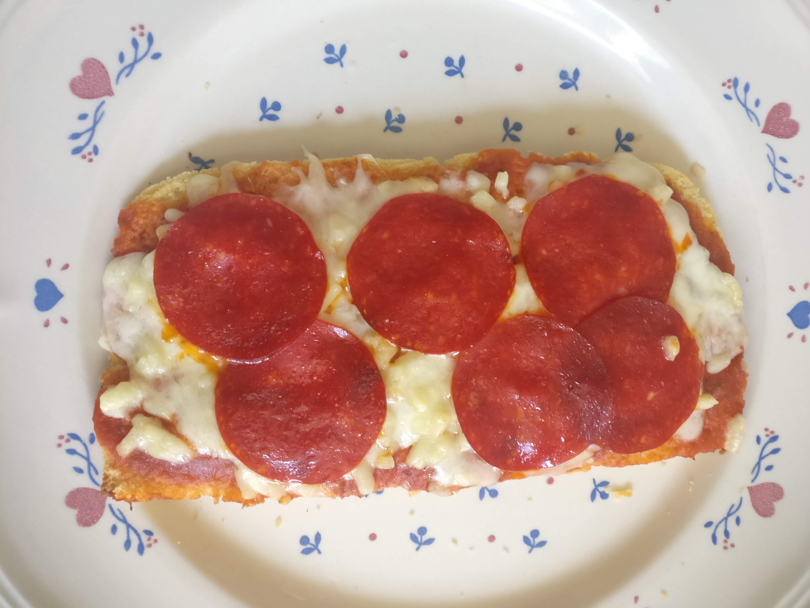
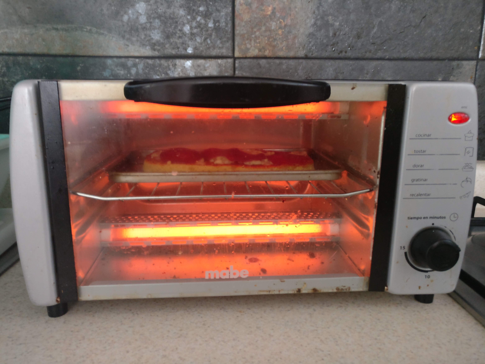

Pizza Keto 🍕

Tiempo de preparación 10 minutos
Ingredientes
-
Aceite de oliva o coco (para engrasar el recipiente en el que se va a hornear)
-
4 huevos grandes
-
2 cucharadas de agua
-
1 cucharadita de ajo en polvo
-
1 cucharadita de cebolla en polvo
-
1 cucharadita de orégano o hierbas finas
-
1/4 de taza de harina de coco
-
6 cucharadas de queso parmesano
-
Toppings:
-
Salsa de de tomate Hunts
- Queso Mozzarella
- Pepperoni
Preparación
-
Rocía aceite en el refractario en el que hornearás la masa.
-
En un tazón bate los huevos, el agua, el ajo en polvo, la cebolla en polvo y el orégano.
-
Vacía 1/4 de taza de harina de coco e intégrala con los ingredientes del paso 2 hasta que sea una pasta homogénea.
-
Agrega las 6 cucharadas de queso parmesano y déjala reposar por un par de minutos.
-
Vacía la mezcla en el refractario y hornéala (en el microondas yo le fui calculando hasta encontrar el tiempo perfecto, el cual fue de 10 minutos para un microondas de baja potencia; en el horno de convección eléctrico por 15 minutos o en una sartén con mantequilla hasta que veas que la horilla se pone dorada).
Esta la hice en una sartén 👇

-
Una vez que tengas la base hecha coloca los toppings :
-
-
Salsa de tomate
-
Queso mozzarella
-
Pepperoni
Pueden variar dependiendo de que tipo de pizza quieres que sea, sólo recuerda que los ingredientes sean bajos en carbohidratos o alimentos dentro de la dieta cetogénica. Recuerda verificar la información nutrimental de cada ingrediente y no olvides hacer la suma para que no excedas tu cantidad de carbohidratos máxima del día.
-
-
Por último coloca la pizza en el horno de convección eléctrico por aproximadamente10 minutos para gratinar el queso y calentar los ingredientes.

Si les gustó compártanla en sus redes sociales y que disfruten mucho su Pizza Keto
Mis Herramientas de trabajo
Laptop: Acer Aspire R15 Convertible
Cámara: Nikon D5300
Celular: Oneplus 3T